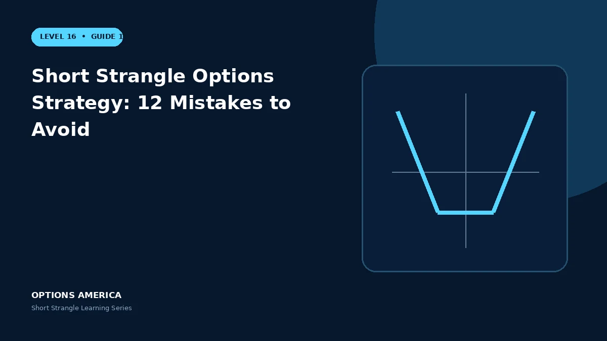

Avoid strike, volatility, sizing, margin, correlation, adjustment, assignment and expiration mistakes.
Mistakes 1–3: false safety
Do not equate OTM with safe, treat probability of profit as expected return or assume the opposite leg caps loss. Model tail size.
Mistakes 4–6: selection
Do not choose strikes only by delta, sell merely because IV is high or ignore skew and catalysts. Price the scenario behind the premium.
Mistakes 7–9: leverage
Do not use all buying power, ignore correlation or size from opening margin. Stress both market direction and volatility together.
Mistakes 10–12: management
Do not roll without recalculating, leave accidental naked exposure or hold cheap options into assignment. Verify fills and follow written exit rules.
A practical example
A trader sells low-delta puts across several correlated stocks. A market gap tests them all, IV rises and total margin expands before individual adjustments can help.
This simplified scenario focuses on selected outcomes; live prices and risks will differ. Live option prices also reflect the underlying price, time decay, rates, dividends, liquidity and transaction costs. Greeks are theoretical estimates, not guarantees.
Build a risk-first trading plan
Before using short strangle options strategy: 12 mistakes to avoid, record the stock price, put and call strikes, expiration, total credit and contract multiplier. Calculate both breakevens, then estimate dollar loss beyond them under upside and downside gaps. A wide strike range improves the starting room but does not define either tail.
Stress several prices, time points and volatility levels, including a skew change that affects the put and call differently. Review delta, gamma, theta, vega and buying power for the complete portfolio. Multiple OTM positions can become tested together during a common market shock.
Define a profit target, maximum tolerated loss, tested-side trigger, margin reserve and latest exit date before entry. Decide whether an event is intentionally included and how assignment would be handled. Use multi-leg orders and confirm quantities after every fill, roll or partial close.
Document the result after exit, including slippage, assignment effects and the largest intraday exposure. Comparing the original forecast with the actual path helps distinguish a sound process from a lucky outcome and improves later strike, duration, margin-reserve and position-size choices under similar market conditions.
Frequently asked questions
Does low delta mean no tail risk?
No.
What is a common portfolio mistake?
Stacking correlated short-volatility exposure.
Why verify every fill?
A missing leg changes risk and margin.
Continue the Short Strangle cluster
Explore related guides: Short Strangle Options Strategy Explained · How to Choose Short Strangle Strikes · Short Strangle Greeks: Delta, Gamma, Theta and Vega. For a structured sequence, use the free Level 16 – Short Strangle course.
Options involve risk and are not suitable for every investor. This material is educational and is not investment, tax or legal advice. Greeks are theoretical estimates, and contract terms and broker requirements can vary.